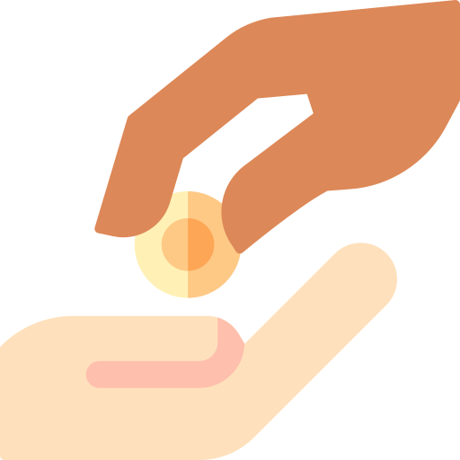
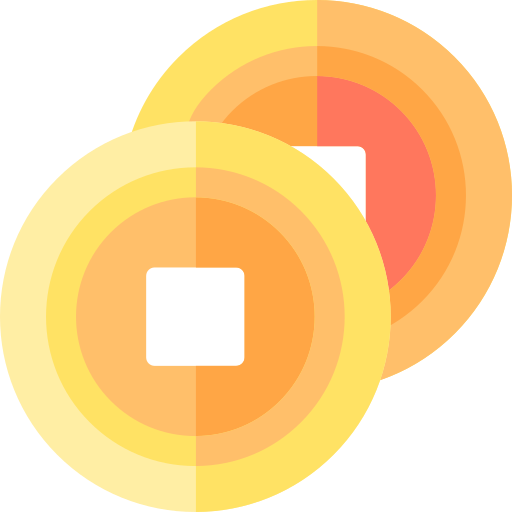

CJ ONE 카드란?
CJ ONE 카드란 문화, 외식, 쇼핑, 엔터테인먼트 등 CJ의 다양한 라이프스타일 브랜드가 하나의 멤버십 서비스로 통합되어 한장의 카드로 포인트를 적립/사용하고 CJ에서 제공하는 다양한 혜택을 함께 즐기실 수 있는 CJ의 새로운 통합 멤버십 카드입니다.
- 뚜레쥬르는 1,000원 이상 구매 시 카드를 발급 받으실 수 있습니다.
- 매장에서 발급 받으신 카드는 뚜레쥬르 홈페이지 또는 CJ ONE 홈페이지에서 회원가입 후 카드 등록하세요.
- 홈페이지에 등록되지 않은 카드는 포인트를 사용하실 수 없습니다.
- 모바일제품교환권/금액권 사용시 포인트 적립 불가하며, 사용금액 제외 후 추가 결제분에 한해 적립 가능합니다.
CJ ONE 혜택
-
혜택1. 적립
뚜레쥬르 0.5%적립(제휴/할인 후 0.1% 적립)
영수증 날짜 기준. 결제 당일에 한해 사후 적립 가능(기존 결제 취소 후 적립)
동일브랜드, 동일매장에서 1일 5회까지만 적립 가능
일부 특수점포(마트/병원/휴게소/공항 등)는 CJ ONE 포인트 적립/사용이 불가합니다.
적립 포인트가 1점 미만인 경우에는 CJ ONE 포인트 적립이 불가합니다. (CJ ONE 이용약관 제 8조 5항에 의거, 포인트 중 소수점 이하의 단위는 절사)
-
혜택2. 포인트 사용
1,000포인트 이상 보유 시 10포인트 단위로 현금처럼 사용
1포인트는 1원의 가치를 지니며, 뚜레쥬르에서는 1,000포인트 이상 보유시, 10포인트 단위로 현금처럼 사용 가능합니다.
포인트 사용시, 반드시 실물카드 또는 CJONE APP 바코드를 소지하셔야 하며, 200,000포인트 이상 사용시에는 멤버십 카드 비밀번호 4자리를 입력해야 포인트 사용 가능합니다. (비밀번호는 CJ ONE 홈페이지-나의 카드에서 입력/설정 가능)
-
혜택3. 보너스 포인트 추가 적립
기본 적립 포인트의 50% 또는 100% 추가 적립
매월 CJ ONE 제휴 브랜드를 4개 이용하시면, 해당 월 총 적립 포인트의 50%를 보너스 포인트로 추가 적립해드립니다. (예: 뚜레쥬르, CGV, 올리브영, 오쇼핑에서 한 달동안 총 1,000 포인트 적립시, 익월에 500 포인트 추가 적립.)
매월 CJ ONE 제휴 브랜드를 5개 이상 이용하시면, 해당 월 총 적립 포인트의 100%를 보너스 포인트로 추가 적립해드립니다. (예: 뚜레쥬르, CGV, 올리브영, 오쇼핑, 엠넷에서 한 달동안 총 1,000 포인트 적립시, 익월에 1,000 포인트 추가 적립.)
- HOME
- 이벤트&멤버십
- CJ ONE 멤버십
>
>